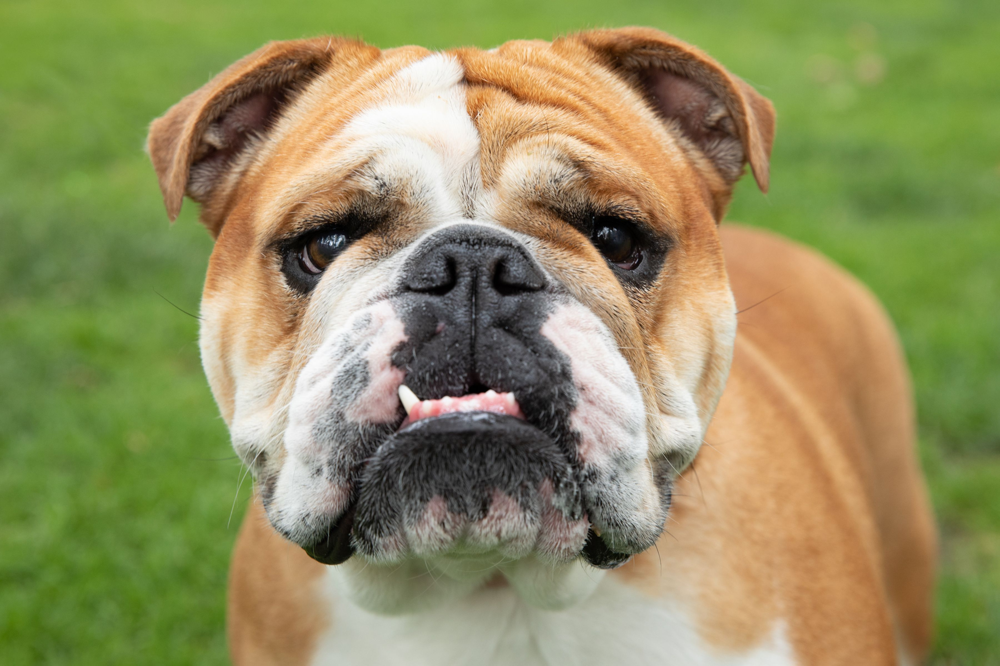
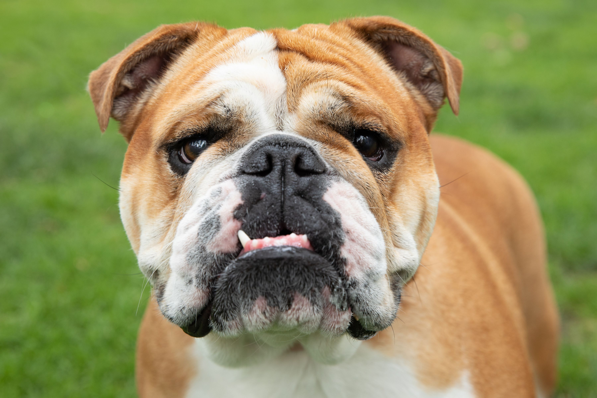

Affenpinscher
Afghan Hound
Africanis
Aidi
Airedale Terrier
Akbash
Akita
Aksaray Malaklisi
Alano Español
Alapaha Blue Blood Bulldog
Alaskan Husky
Alaskan Klee Kai
Alaskan Malamute
Alopekis
Alpine Dachsbracke
American Bulldog
American Bully
American Cocker Spaniel
American English Coonhound
American Eskimo Dog
American Foxhound
American Hairless Terrier
American Leopard Hound
American Pit Bull Terrier
American Staffordshire Terrier
American Water Spaniel
Andalusian Terrier
Anglo-Français de Petite Vénerie
Appenzeller Sennenhund
Ariège Pointer
Ariégeois
Argentine Pila
Armant
Armenian Gampr
Artois Hound
Australian Cattle Dog
Australian Kelpie
Australian Shepherd
Australian Silky Terrier
Australian Stumpy Tail Cattle Dog
Australian Terrier
Austrian Black and Tan Hound
Austrian Pinscher
Azawakh
Bắc Hà
Bakharwal
Banjara Hound
Bankhar Dog
Barak hound
Barbado da Terceira
Barbet
Basenji
Basque Shepherd Dog
Basset Artésien Normand
Basset Bleu de Gascogne
Basset Fauve de Bretagne
Basset Hound
Bavarian Mountain Hound
Beagle
Beagle-Harrier
Bearded Collie
Beauceron
Bedlington Terrier
Belgian Shepherd
Bergamasco Shepherd
Berger Picard
Bernese Mountain Dog
Bichon Frisé
Biewer Terrier
Billy
Black and Tan Coonhound
Black and Tan Terrier
Black Norwegian Elkhoun
Black Russian Terrier
Black Mouth Cur
Bloodhound
Blue Lacy
Blue Picardy Spaniel
Bluetick Coonhound
Boerboel
Bohemian Shepherd
Bolognese
Border Collie
Border Terrier
Borzoi
Boston Terrier
Bouvier des Ardennes
Bouvier des Flandres
Boxer
Boykin Spaniel
Bracco Italiano
Braque d'Auvergne
Braque du Bourbonnais
Braque Français
Braque Saint-Germain
Brazilian Terrier
Briard
Briquet de Provence
Briquet Griffon Vendéen
Brittany
Broholmer
Bruno Jura Hound
Bucovina Shepherd Dog
Bulgarian Hound
Bulgarian Scenthound
Bull Arab
Bull Terrier
Bulldog
Bullmastiff
Bully Kutta
Burgos Pointer
Ca Mè Mallorquí
Ca de Bou
Ca Rater Mallorquí
Cairn Terrier
Calupoh
Campeiro Bulldog
Can de Chira
Can de Palleiro
Canaan Dog
Canadian Eskimo Dog
Cane Corso
Cane di Oropa
Cane Paratore
Cantabrian Water Dog
Cão de Gado Transmontano
Cardigan Welsh Corgi
Carea Leonés
Carolina Dog
Carpathian Shepherd dog
Castro Laboreiro Dog
Catahoula Leopard Dog
Catalan Sheepdog[
Caucasian Shepherd Dog
Cavalier King Charles Spaniel
Central Asian Shepherd Dog
Český fousek
Český strakatý pes
Cesky Terrier
Chesapeake Bay Retriever
Chien Français Blanc et Noir
Chien Français Blanc et Orange
Chien Français Tricolore
Chihuahua
Chilean Terrier
Chinese Crested Dog
Chinook
Chippiparai
Chongqing
Chortai
Chow Chow
Chukotka sled dog
Cimarrón Uruguayo
Cirneco dell'Etna
Clumber Spaniel
Colombian Fino Hound
Continental bulldog
Corsican Dog
Coton de Tulear
Cretan Hound
Croatian Sheepdog
Curly-coated Retriever
Czechoslovakian Wolfdog
D–K
Dachshund
Dalmatian
Dandie Dinmont Terrier
Danish Spitz
Danish–Swedish Farmdog
Denmark Feist
Dikkulak
Dingo
Dobermann
Dogo Argentino
Dogo Sardesco
Dogue Brasileiro
Dogue de Bordeaux
Donggyeongi
Drentse Patrijshond
Drever
Dunker
Dutch Shepherd
Dutch Smoushond
East Siberian Laika
East European Shepherd
Ecuadorian Hairless Dog
English Cocker Spaniel
English Foxhound
English Mastiff
English Setter
English Shepherd
English Springer Spaniel
English Toy Terrier (Black & Tan)
Entlebucher Mountain Dog
Erbi Txakur
Estonian Hound
Estrela Mountain Dog
Eurasier
Faroese Sheepdog
Field Spaniel
Fila Brasileiro
Finnish Hound
Finnish Lapphund
Finnish Spitz
Flat-coated Retriever
Florida Brown Dog a/k/a Florida Cracker Cur
French Bulldog
French Spaniel
Galgo Español
Gascon Saintongeois
Gaucho sheepdog
Georgian Shepherd
German Hound
German Longhaired Pointer
German Pinscher
German Roughhaired Pointer
German Shepherd
German Shorthaired Pointer
German Spaniel
German Spitz
German Wirehaired Pointer
Giant Schnauzer
Glen of Imaal Terrier
Golden Retriever
Gończy Polski
Gordon Setter
Grand Anglo-Français Blanc et Noir
Grand Anglo-Français Blanc et Orange
Grand Anglo-Français Tricolore
Grand Basset Griffon Vendéen
Grand Bleu de Gascogne
Grand Griffon Vendéen
Great Dane
Greater Swiss Mountain Dog
Greek Harehound
Greek Shepherd
Greenland Dog
Greyhound
Griffon Bleu de Gascogne
Griffon Bruxellois
Griffon Fauve de Bretagne
Griffon Nivernais
Gull Dong
Gull Terrier
Hällefors Elkhound
Halden Hound
Hamiltonstövare
Hanover Hound
Harrier
Havanese
Himalayan Sheepdog
Hmong bobtail dog
Hokkaido
Hovawart
Huntaway
Hygen Hound
Ibizan Hound
Icelandic Sheepdog
Indian pariah dog
Indian Spitz
Irish Red and White Setter
Irish Setter
Irish Terrier
Irish Water Spaniel
Irish Wolfhound
Istrian Coarse-haired Hound
Istrian Shorthaired Hound
Italian Greyhound
Jack Russell Terrier
Jagdterrier
Jämthund
Japanese Chin
Japanese Spitz
Japanese Terrier
Jeju
Jindo
Jonangi
Kai Ken
Kaikadi
Kamchatka Sled Dog
Kangal Shepherd Dog
Kanni
Karakachan
Karelian Bear Dog
Karelo-Finnish Laika
Kars
Karst Shepherd
Kazakh Tazy
Keeshond
Kerry Beagle
Kerry Blue Terrier
Khala
King Charles Spaniel
King Shepherd
Kintamani
Kishu
Kokoni
Kombai
Komondor
Kooikerhondje
Koolie
Kromfohrländer
Kuchi
Kunming
Kurdish Mastiff
Kuvasz
L–R
Labrador Retriever
Lagotto Romagnolo
Lài
Lakeland Terrier
Lancashire Heeler
Landseer
Lapponian Herder
Large Münsterländer
Leonberger
Levriero Sardo
Lhasa Apso
Liangshan Dog
Lithuanian Hound
Lobito Herreño
Löwchen
Lucas Terrier
Lupo Italiano
Mackenzie River Husky
Magyar Agár
Mahratta Hound
Majorca Shepherd Dog
Maltese
Manchester Terrier
Maneto
Markiesje
Maremmano-Abruzzese Sheepdog
McNab
Miniature American Shepherd
Miniature Bull Terrier
Miniature Fox Terrier
Miniature Pinscher
Miniature Schnauzer
Molossus of Epirus
Mongrel
Montenegrin Mountain Hound
Moscow Watchdog
Mountain Cur
Mountain Feist
Mudhol Hound
Mudi
Neapolitan Mastiff
Nenets Herding Laika
New Guinea singing dog
New Zealand Heading Dog
Newfoundland
Norfolk Terrier
Norrbottenspets
Northern Inuit Dog
Norwegian Buhund
Norwegian Elkhound
Norwegian Lundehund
Norwich Terrier
Nova Scotia Duck Tolling Retriever
Nureongi
Old Danish Pointer
Old English Sheepdog
Olde English Bulldogge
Otterhound
Pachón Navarro
Pampas Deerhound
Papillon
Parson Russell Terrier
Pastor Garafiano
Pastore della Lessinia e del Lagorai
Patagonian Sheepdog
Patterdale Terrier
Pekingese
Pembroke Welsh Corgi
Perdigueiro Galego
Perro Majorero
Peruvian Hairless Dog
Petit Basset Griffon Vendéen
Petit Bleu de Gascogne
Phalène
Pharaoh Hound
Phu Quoc Ridgeback
Picardy Spaniel
Plummer Terrier
Plott Hound
Podenco Andaluz
Podenco Canario
Podenco Valenciano
Pointer
Poitevin
Polish Greyhound
Polish Hound
Polish Lowland Sheepdog
Pomeranian
Pont-Audemer Spaniel
Poodle
Porcelaine
Portuguese Podengo
Portuguese Pointer
Portuguese Sheepdog
Portuguese Water Dog
Posavac Hound
Pražský Krysařík
Presa Canario
Pudelpointer
Pug
Puli
Pumi
Pungsan
Pyrenean Mastiff
Pyrenean Mountain Dog
Pyrenean Sheepdog
Rafeiro do Alentejo
Rajapalayam
Rampur Greyhound
Rastreador Brasileiro
Rat Terrier
Ratonero Murciano
Redbone Coonhound
Rhodesian Ridgeback
Rize Koyun
Romanian Mioritic Shepherd Dog
Romanian Raven Shepherd Dog
Rottweiler
Rough Collie
Russian Spaniel
Russkiy Toy
Russo-European Laika
Ryukyu
S–Z
Saarloos wolfdog
Sabueso Español
Saint Miguel Cattle Dog
Saint-Usuge Spaniel
Sakhalin Husky
Saluki
Samoyed
Sapsali
Sarabi
Sardinian Shepherd Dog
Šarplaninac
Schapendoes
Schillerstövare
Schipperke
Schweizer Laufhund
Schweizerischer Niederlaufhund
Scottish Deerhound
Scottish Terrier
Sealyham Terrier
Segugio dell'Appennino
Segugio Italiano
Segugio Maremmano
Serbian Hound
Serbian Tricolour Hound
Serrano Bulldog
Shar Pei
Shetland Sheepdog
Shiba Inu
Shih Tzu
Shikoku
Shiloh Shepherd
Siberian Husky
Silken Windhound
Sinhala Hound
Skye Terrier
Sloughi
Slovak Rough-haired Pointer
Slovak Cuvac
Slovenský kopov
Smaland Hound
Small Münsterländer
Smithfield
Smooth Collie
Smooth Fox Terrier
Soft-coated Wheaten Terrier
South Russian Ovcharka
Spanish Mastiff
Spanish Water Dog
Spino degli Iblei
Spinone Italiano
Sporting Lucas Terrier
St. Bernard
St. Hubert Jura Hound
Stabyhoun
Staffordshire Bull Terrier
Standard Schnauzer
Stephens Stock
Styrian Coarse-haired Hound
Sussex Spaniel
Swedish Lapphund
Swedish Vallhund
Taigan
Taiwan Dog
Tamaskan Dog
Tang Dog
Tarsus çatalburun
Tatra Shepherd Dog
Teddy Roosevelt Terrier
Telomian
Tenterfield Terrier
Thai Bangkaew Dog
Thai Ridgeback
Tibetan Kyi Apso
Tibetan Mastiff
Tibetan spaniel
Tibetan Terrier
Tonya Finosu
Tornjak
Tosa
Toy Fox Terrier
Toy Manchester Terrier
Transylvanian Hound
Treeing Cur
Treeing Feist
Treeing Tennessee Brindle
Treeing Walker Coonhound
Trigg Hound
Tyrolean Hound
Valencian Terrier
Vikhan
Villano de Las Encartaciones
Villanuco de Las Encartaciones
Vizsla
Volkosob
Volpino Italiano
Weimaraner
Welsh Hound
Welsh Sheepdog
Welsh Springer Spaniel
Welsh Terrier
West Country Harrier
West Highland White Terrier
West Siberian Laika
Westphalian Dachsbracke
Wetterhoun
Whippet
White Shepherd
White Swiss Shepherd Dog
Wire Fox Terrier
Wirehaired Pointing Griffon
Wirehaired Vizsla
Xiasi Dog
Xoloitzcuintle
Yakutian Laika
Yorkshire Terrier
Zerdava


 
